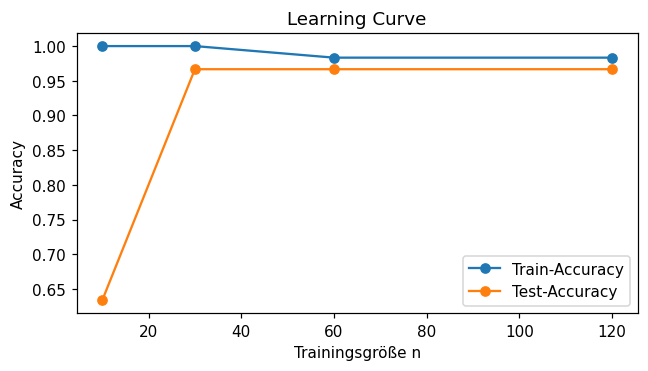
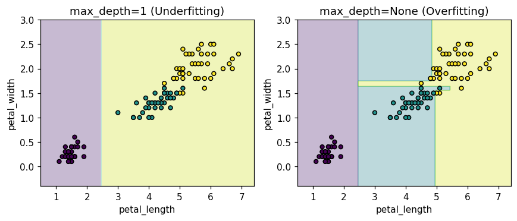

Selbst programmieren
Lies die Aufgabenstellung und vergleiche dein Ziel mit der „Erwarteten Ausgabe“.
Schreibe deine Lösung dann selbst im freien Code-Bereich,
der per Klick auf „▶ Code ausführen“ echtes Python (Pyodide, inkl. numpy/pandas/scikit-learn)
im Browser ausführt. Erst danach die Musterlösung aufklappen.
Alle Aufgaben arbeiten mit dem iris-Datensatz (150 Samples, 4 Features, 3 Klassen).
🌳 Overfitting & Underfitting erkennen
LeichtTrainiere zwei DecisionTreeClassifier mit unterschiedlicher max_depth und vergleiche Train- und Test-Accuracy.
- Trainiere einen Baum mit
max_depth=1und einen mitmax_depth=None(random_state=42). - Gib für beide jeweils Train- und Test-Accuracy aus (gerundet auf 3 Nachkommastellen).
- Welcher Baum overfittet, welcher underfittet?
max_depth=1: train=0.667 test=0.667 max_depth=None: train=1.000 test=0.933
💡 Musterlösung anzeigen
max_depth=1 kann die Daten kaum trennen — Underfitting (Train- und Test-Accuracy
sind beide niedrig und fast gleich, hohe Bias). max_depth=None lässt den Baum bis zur
Reinheit wachsen — Train-Accuracy = 1.0, aber Test-Accuracy ist niedriger: Overfitting
(hohe Varianz, das Modell hat Rauschen mitgelernt).
from sklearn.tree import DecisionTreeClassifier
for depth in [1, None]:
tree = DecisionTreeClassifier(max_depth=depth, random_state=42)
tree.fit(X_train, y_train)
print(f"max_depth={depth}: train={tree.score(X_train,y_train):.3f} "
f"test={tree.score(X_test,y_test):.3f}")max_depth=1: train=0.667 test=0.667 max_depth=None: train=1.000 test=0.933
⚖️ Bias-Variance Tradeoff mit k-NN
MittelUntersuche den Bias-Variance Tradeoff am Beispiel von KNeighborsClassifier mit unterschiedlichem k.
- Trainiere KNN-Modelle mit
k=1undk=50. - Gib für beide jeweils Train- und Test-Accuracy aus (gerundet auf 3 Nachkommastellen).
- Ordne die beiden Modelle den Begriffen „hohe Varianz“ und „hohe Bias“ zu.
k=1: train=1.000 test=0.967 k=50: train=0.900 test=0.900
💡 Musterlösung anzeigen
k=1 merkt sich jeden einzelnen Trainingspunkt (Train-Accuracy = 1.0) — das ist
hohe Varianz (sehr flexibel, reagiert stark auf einzelne Punkte).
k=50 mittelt über sehr viele Nachbarn und glättet die Entscheidungsgrenze stark —
das ist hohe Bias (Train- und Test-Accuracy sinken gemeinsam ab, das Modell ist zu starr).
from sklearn.neighbors import KNeighborsClassifier
for k in [1, 50]:
knn = KNeighborsClassifier(n_neighbors=k)
knn.fit(X_train, y_train)
print(f"k={k}: train={knn.score(X_train,y_train):.3f} "
f"test={knn.score(X_test,y_test):.3f}")k=1: train=1.000 test=0.967 k=50: train=0.900 test=0.900
🔄 Cross-Validation mit cross_val_score
MittelBewerte eine LogisticRegression mit 5-facher Cross-Validation auf dem gesamten Datensatz.
- Nutze
cross_val_scoremitcv=5aufX, y(nicht nur X_train!). - Gib die 5 Scores gerundet auf 3 Nachkommastellen aus.
- Gib Mittelwert und Standardabweichung der Scores aus.
Scores: [0.967 1. 0.933 0.967 1. ] Mean: 0.973 Std: 0.025
💡 Musterlösung anzeigen
cross_val_score teilt X, y automatisch in 5 Folds, trainiert 5 separate Modelle
und gibt 5 Test-Scores zurück. Der Mittelwert ist eine deutlich robustere Schätzung der Modellgüte als
ein einziger Train-Test-Split — die Standardabweichung zeigt, wie stark das Ergebnis vom konkreten Split abhängt.
from sklearn.linear_model import LogisticRegression
from sklearn.model_selection import cross_val_score
clf = LogisticRegression(max_iter=200)
scores = cross_val_score(clf, X, y, cv=5)
print("Scores:", np.round(scores, 3))
print("Mean:", round(scores.mean(), 3), "Std:", round(scores.std(), 3))Scores: [0.967 1. 0.933 0.967 1. ] Mean: 0.973 Std: 0.025
📈 Learning Curve per Hand
SchwerUntersuche, wie sich Train- und Test-Accuracy eines DecisionTreeClassifier(max_depth=3) mit wachsender Trainingsmenge verändern.
- Trainiere für
n in [10, 30, 60, 120]jeweils auf den erstennZeilen vonX_train, y_train. - Gib für jedes
nTrain-Accuracy (auf dennZeilen) und Test-Accuracy (aufX_test) aus. - Beschreibe, wie sich die Lücke zwischen Train- und Test-Accuracy mit wachsendem
nverändert.
n=10: train=1.000 test=0.633 n=30: train=1.000 test=0.967 n=60: train=0.983 test=0.967 n=120: train=0.983 test=0.967
💡 Musterlösung anzeigen
Bei sehr wenigen Trainingsdaten (n=10) merkt sich der Baum diese perfekt (Train=1.0),
generalisiert aber kaum (Test=0.633) — große Lücke = Overfitting. Mit mehr Daten
schrumpft die Lücke zwischen Train- und Test-Accuracy, weil das Modell die tatsächliche Struktur
statt einzelner Punkte lernt. Ab n=60 ändert sich kaum noch etwas — das Modell hat
seine Kapazitätsgrenze (max_depth=3) erreicht.
from sklearn.tree import DecisionTreeClassifier
for n in [10, 30, 60, 120]:
Xs, ys = X_train[:n], y_train[:n]
tree = DecisionTreeClassifier(max_depth=3, random_state=42)
tree.fit(Xs, ys)
print(f"n={n}: train={tree.score(Xs,ys):.3f} test={tree.score(X_test,y_test):.3f}")n=10: train=1.000 test=0.633 n=30: train=1.000 test=0.967 n=60: train=0.983 test=0.967 n=120: train=0.983 test=0.967
Die Learning Curve macht die Tabelle aus der Lösung sofort sichtbar: die
blaue Train-Kurve startet bei 1.0 und sinkt leicht, die orange Test-Kurve startet niedrig
und steigt stark an — beide Kurven nähern sich mit wachsendem n an. Die
Lücke zwischen ihnen ist ein direktes visuelles Maß für Overfitting.
import matplotlib.pyplot as plt
ns = [10, 30, 60, 120]
train_acc, test_acc = [], []
for n in ns:
Xs, ys = X_train[:n], y_train[:n]
tree = DecisionTreeClassifier(max_depth=3, random_state=42)
tree.fit(Xs, ys)
train_acc.append(tree.score(Xs, ys))
test_acc.append(tree.score(X_test, y_test))
plt.plot(ns, train_acc, marker='o', label='Train-Accuracy')
plt.plot(ns, test_acc, marker='o', label='Test-Accuracy')
plt.xlabel("Trainingsgröße n"); plt.ylabel("Accuracy")
plt.title("Learning Curve"); plt.legend()
plt.show()
✂️ KFold-Splits selbst erzeugen
MittelErzeuge mit KFold die Indizes für 5 Folds und gib die Größen der Train-/Test-Splits aus.
- Erstelle
KFold(n_splits=5, shuffle=True, random_state=42). - Iteriere mit
kf.split(X)über alle Folds. - Gib für jeden Fold die Anzahl der Train- und Test-Indizes aus.
Fold 1: train=120 test=30 Fold 2: train=120 test=30 Fold 3: train=120 test=30 Fold 4: train=120 test=30 Fold 5: train=120 test=30
💡 Musterlösung anzeigen
KFold(n_splits=5) teilt die 150 Samples in 5 gleich große Teile (je 30). Bei jeder Iteration
dient ein Teil (30 Samples) als Test-Set und die restlichen vier (120 Samples)
als Training — über alle 5 Folds hinweg ist also jedes Sample genau einmal im Test-Set. shuffle=True
sorgt dafür, dass die Reihenfolge der Daten keine Rolle spielt.
from sklearn.model_selection import KFold
kf = KFold(n_splits=5, shuffle=True, random_state=42)
for i, (train_idx, test_idx) in enumerate(kf.split(X)):
print(f"Fold {i+1}: train={len(train_idx)} test={len(test_idx)}")Fold 1: train=120 test=30 Fold 2: train=120 test=30 Fold 3: train=120 test=30 Fold 4: train=120 test=30 Fold 5: train=120 test=30
📊 Entscheidungsgrenzen visualisieren: Under- vs. Overfitting
MittelZeichne die Entscheidungsgrenzen von zwei DecisionTreeClassifier mit max_depth=1 und max_depth=None auf den Features petal_length/petal_width (Spalten 2 und 3).
- Erzeuge mit
X2 = X[:, 2:4]ein 2D-Feature-Set und splitte es (stratify, random_state=42). - Erzeuge mit
np.meshgridein Gitter über den Wertebereich beider Features. - Trainiere beide Bäume, sage für jeden Gitterpunkt die Klasse vorher (
predict) und zeichne das Ergebnis mitplt.contourfsowie die Trainingspunkte mitplt.scatter. - Erstelle zwei Subplots (
plt.subplots(1, 2, ...)), einen promax_depth.
Zwei Subplots: links eine grobe, gerade Trennlinie (max_depth=1, Underfitting), rechts viele kleine, eckige Regionen, die einzelne Punkte exakt umschließen (max_depth=None, Overfitting).

💡 Musterlösung anzeigen
Mit max_depth=1 kann der Baum nur einen Split machen — die
Entscheidungsgrenze besteht aus genau zwei großen, geraden Regionen (Underfitting,
hohe Bias). Mit max_depth=None wächst der Baum, bis jedes Blatt rein ist — die
Entscheidungsgrenze zerfällt in viele kleine, eckige Inseln, die einzelne (auch fehlplatzierte)
Trainingspunkte exakt einschließen (Overfitting, hohe Varianz). Diese Visualisierung
macht den Bias-Variance-Tradeoff aus Aufgabe 1 unmittelbar greifbar.
import matplotlib.pyplot as plt
xx, yy = np.meshgrid(
np.linspace(X2[:,0].min()-0.5, X2[:,0].max()+0.5, 200),
np.linspace(X2[:,1].min()-0.5, X2[:,1].max()+0.5, 200)
)
fig, axes = plt.subplots(1, 2, figsize=(8, 3.5))
for ax, depth, title in zip(axes, [1, None],
["max_depth=1 (Underfitting)", "max_depth=None (Overfitting)"]):
tree = DecisionTreeClassifier(max_depth=depth, random_state=42)
tree.fit(X2_train, y2_train)
Z = tree.predict(np.c_[xx.ravel(), yy.ravel()]).reshape(xx.shape)
ax.contourf(xx, yy, Z, alpha=0.3, cmap='viridis')
ax.scatter(X2_train[:,0], X2_train[:,1], c=y2_train, cmap='viridis', edgecolor='k', s=20)
ax.set_title(title)
ax.set_xlabel("petal_length"); ax.set_ylabel("petal_width")
plt.show()